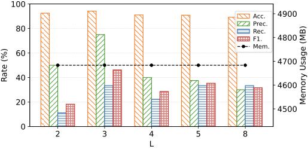
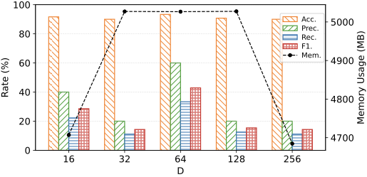

Referenced from §4.3.1 Structural Mutation in the main paper.
Input: G⁺ = (V, E) (benign anchor graph), G⁻ (attack corpus), K (retrieval count), m (seed count), r (hop radius)
Output: mutated graph G̃ = (Ṽ, Ẽ)
Referenced from §4.3.1 LLM-Guided Edge Mutation in the main paper.
G̃_mid has been obtained by replacing a benign subgraph S in anchor G⁺ with an aligned attack subgraph S′ from corpus G⁻. The internal attack edges of S′ must be preserved to maintain the attack causal chain. We ask the LLM to edit only the boundary edges to maximize stealth.
S′ ↔ C):
[(src_type:attr, op, dst_type:attr), ...]
[(src_type:attr, op, dst_type:attr), ...]
C ↔ C):
[(src_type:attr, op, dst_type:attr), ...]
[(src_type:attr, op, dst_type:attr), ...]
ADD — add this new edge to blend the attack into surrounding benign behavior, or to enrich benign context as natural noise;
REMOVE — remove this existing edge if it exposes the attack or appears semantically out of place in the new context;
KEEP — leave the edge unchanged.
S′ are not editable and must not appear in decisions.
[{edge_id, action: ADD|REMOVE|KEEP, reason}].
Referenced from §4.3.2 Semantic Mutation in the main paper.
r-hop benign context C.
{n} process nodes:
{attributes}, associated_nodes={file/network_attributes}, strategy={assigned_strategy}, preserve={critical_component}, C={context_triples}
{attributes}, associated_nodes={file/network_attributes}, strategy={assigned_strategy}, preserve={critical_component}, C={context_triples}
[{node_id, new_attributes, associated_updates}].
Referenced from RQ6. Influence of Different Parameters in the main paper. The main paper reports sensitivity for time window length (T) and neighborhood size (r); analysis for GNN layers (L) and embedding dimension (D) is provided here.
L)This parameter refers to the number of layers in the GNN. As the model depth increases, detection performance exhibits a non-linear trend: shallow architectures (e.g., 2 layers) yield lower F1 scores due to limited representational capacity; a depth of 3 layers achieves the best trade-off between expressiveness and generalization, resulting in the highest F1; further increasing the depth to 4 layers or more leads to performance degradation. Memory consumption remains largely stable across different depth settings. Overall, a 3-layer model provides the most robust balance between detection performance and resource overhead.

D)Embedding dimension refers to the dimensionality of the embedding vectors, which controls the scale of node feature representations. Increasing the dimension from 16 to 64 significantly improves recall and F1, indicating enhanced structural representation. Further increasing the dimension to 128 and 256 degrades F1, as embeddings are expanded into weakly informative dimensions, reducing the separability between normal and anomalous samples under distance-based metrics. Memory consumption varies little with embedding dimension. Overall, a 64-dimensional embedding provides the best balance between detection performance and system overhead.

Referenced from §5 Implementation and RQ2 setup in the main paper. The main paper points here for the exact model versions, prompts, retry policy, and per-model configurations; the local deployment recipe and the USD-cost pricing source are also released here for reproducibility.
All five LLMs are queried with the JSON-only system instruction described in Prompts B and C above. The table below lists the exact model version (snapshot/release tag), shared sampling parameters (temperature, top-p, top-k, max generation length), stop tokens, and access mode for each model.
The candidate-selection stage uses a 512-token budget (short scoring output); the semantic-mutation stage uses 1024 tokens (richer attribute edits). The shared temperature 0.2 keeps generation stable while preserving enough variability for diverse mutations.
For Qwen2.5-7B/14B and GLM-4-9B we use vLLM 0.6.x for batched inference on a single NVIDIA RTX 4090 (24 GB):
Average end-to-end latency reported in tab:llm-cost includes network round-trip for API models (GPT-4o, DeepSeek-V3) and local vLLM queuing for the others.
When a generated mutation fails any of the four unified-verification checks (operation legality, attribute feasibility, imperceptibility, hardness), ATHENA does not silently drop the candidate. Instead:
The "Total Calls" column in tab:llm-cost reports the per-snapshot average call count (1 selection + 1 mutation + average retries), which directly reflects each model's verification pass-through rate.
The "USD / 1k Snap" column in tab:llm-cost is computed as follows:
$2.50 per 1M input tokens, $10.00 per 1M output tokens), multiplied by per-snapshot token usage × Total Calls × 1000.~$0.40/hour) × wall-clock time per snapshot × 1000.Caveat. API prices change frequently; the absolute USD numbers are illustrative as of the paper's revision date. The per-call token counts and latencies in tab:llm-cost are physical quantities and remain reproducible regardless of pricing shifts.
The main paper Table III (tab:accrute) reports detection performance on six datasets (E3-Cadets, E3-Theia, E5-ClearScope, E5-Trace, OpTC, ATLAS). The four remaining DARPA host sub-datasets (E3-ClearScope, E3-Trace, E5-Cadets, E5-Theia) are reported below; ATHENA achieves the best F1 on each of these as well. Per-dataset attack-node ground truth follows the strict labels from~\cite{bilot2025simpler} (E3-ClearScope: N+=41; E3-Trace: 36; E5-Cadets: 126; E5-Theia: 70), with N− fixed at 2×N+ for a balanced evaluation set; all five methods are evaluated on identical (N+, N−) per dataset.
| Dataset | Method | Acc. (%) | Prec. (%) | Rec. (%) | F1 (%) | FPR (%) |
|---|---|---|---|---|---|---|
| E3-ClearScope N+=41, N−=82 | ORTHRUS | 91.87 | 89.74 | 85.37 | 87.50 | 4.88 |
| TAPAS | 82.11 | 75.68 | 68.29 | 71.79 | 10.98 | |
| ATLAS | 78.86 | 70.27 | 63.41 | 66.67 | 13.41 | |
| MAGIC | 86.99 | 82.05 | 78.05 | 80.00 | 8.54 | |
| ATHENA | 95.12 | 92.68 | 92.68 | 92.68 | 3.66 | |
| E3-Trace N+=36, N−=72 | ORTHRUS | 87.04 | 80.56 | 80.56 | 80.56 | 9.72 |
| TAPAS | 76.85 | 66.67 | 61.11 | 63.77 | 15.28 | |
| ATLAS | 79.63 | 70.59 | 66.67 | 68.57 | 13.89 | |
| MAGIC | 84.26 | 77.14 | 75.00 | 76.06 | 11.11 | |
| ATHENA | 92.59 | 88.89 | 88.89 | 88.89 | 5.56 | |
| E5-Cadets N+=126, N−=252 | ORTHRUS | 85.98 | 79.67 | 77.78 | 78.71 | 9.92 |
| TAPAS | 83.60 | 79.63 | 68.25 | 73.50 | 8.73 | |
| ATLAS | 78.31 | 68.97 | 63.49 | 66.11 | 14.29 | |
| MAGIC | 86.51 | 77.78 | 83.33 | 80.46 | 11.90 | |
| ATHENA | 93.65 | 89.84 | 91.27 | 90.55 | 5.16 | |
| E5-Theia N+=70, N−=140 | ORTHRUS | 90.48 | 89.06 | 81.43 | 85.07 | 5.00 |
| TAPAS | 81.90 | 77.59 | 64.29 | 70.31 | 9.29 | |
| ATLAS | 80.48 | 75.44 | 61.43 | 67.72 | 10.00 | |
| MAGIC | 82.86 | 75.76 | 71.43 | 73.53 | 11.43 | |
| ATHENA | 92.86 | 87.67 | 91.43 | 89.51 | 6.43 |
All results use the same train/test split, hyperparameters, and evaluation protocol described in §V of the main paper.
The annotated APT detection dataset (manually verified malicious entity labels and ATT&CK technique labels for each malicious snapshot across DARPA E3, DARPA E5, ATLAS, and OpTC) is publicly available at:
https://anonymous.4open.science/r/APT-ATHENA
The annotations were performed by three doctoral researchers in system security based on official attack reports. The dataset includes provenance graph snapshots, malicious entity labels, and ATT&CK technique mappings used in the experiments reported in §V of the main paper.
Referenced from §V RQ2 (2) Attack Variant Reliability in the main paper. The main paper reports per-condition usability/F1/MMD p-values in Table V (tab:variant-usability); this section provides the rater recruitment, scoring rubric, per-condition Krippendorff's α, MMD test configuration, and a sample of per-variant scores.
Three security analysts with 5+ years in threat hunting / SOC operations were recruited independently. None were involved in the design or implementation of ATHENA. Raters were compensated at a standard hourly consulting rate and signed an NDA covering the synthesized attack content.
For each generated variant (rendered as a serialized provenance sub-graph with associated process commands, file paths, and network endpoints), raters scored realism on a 5-point Likert scale:
Usability is the share of variants scoring ≥4 (i.e., counted as production-grade realistic). Raters worked independently in a blinded protocol: variant order was randomized per rater, and condition/model identity was withheld.
Overall inter-rater agreement is α = 0.83 (interval scale, treating Likert as ordinal-interval). Per-condition breakdown:
α > 0.80 indicates substantial agreement across all conditions, supporting the validity of the usability scores reported in tab:variant-usability.
The Maximum Mean Discrepancy (MMD) test uses a Gaussian RBF kernel with bandwidth σ chosen via the median heuristic on the pooled embedding distances. Embeddings come from the trained 3-layer GIN encoder (64-dim) used in the main detection model. For each condition, we sample 500 synthesized attack snapshots and 500 real (benchmark) attack snapshots; p-values are computed from 1000 permutation rounds. p > 0.05 indicates we cannot reject the null hypothesis of identical distribution.
A subset of per-variant scores (rater R1/R2/R3 individual ratings, mean, and usability flag) for the GPT-4o × Full condition is shown below; the full per-variant CSV for all 3000 variants (5 models × 6 conditions × 100 variants) is hosted alongside the code repository.
Referenced from §V RQ3 (1) ATT&CK Technique Mapping in the main paper. The main paper reports Full-Enhanced's residual 9.4% Same-Tactic Errors (STE) and 5.7% Cross-Tactic Errors (CTE); representative cases for each error class are provided here, drawn from the failure traces of Full-Enhanced on the four benchmark datasets.
STE occurs when the predicted technique shares the correct ATT&CK tactic but resolves to a different sub-technique. Root cause: highly overlapping action semantics within the same tactic confuse Sentence-BERT embeddings even after dual-side enhancement.
Case STE-1 — Persistence: T1547.001 vs T1546.015
T1547.001 Registry Run Keys / Startup FolderT1546.015 Component Object Model HijackingHKCU\Software\Microsoft\Windows\CurrentVersion\Run then exits.Case STE-2 — Execution: T1059.001 vs T1059.003
T1059.001 PowerShellT1059.003 Windows Command Shellcmd.exe spawns powershell.exe -nop -w hidden -c <base64>.Case STE-3 — Defense Evasion: T1070.004 vs T1070.001
T1070.004 File DeletionT1070.001 Clear Windows Event LogsC:\Windows\System32\winevt\Logs\.NtDeleteFile) without the higher-level intent.CTE occurs when the predicted ATT&CK tactic itself is wrong. Root cause: audit records expose only operation-level signatures (file open, network connect, syscall arguments) without payload semantics, so techniques across tactics that share the same operational shape become ambiguous.
Case CTE-1 — Exfiltration vs Command and Control: T1041 vs T1105
T1041 Exfiltration Over C2 ChannelT1105 Ingress Tool Transfer/tmp/data.tar.gz read, socket send() to attacker IP.Case CTE-2 — Discovery vs Discovery (cross sub-tactic boundary): T1083 vs T1057
T1083 File and Directory DiscoveryT1057 Process Discoveryls /etc, ps -ef, cat /proc/cpuinfo, ls /home.ps//proc reads, biasing the top-1 toward process discovery.Case CTE-3 — Credential Access vs Collection: T1003.008 vs T1005
T1003.008 OS Credential Dumping: /etc/passwd and /etc/shadowT1005 Data from Local System/etc/passwd and /etc/shadow for read, copies content to /tmp/creds.txt.Across all four datasets, STE and CTE residuals concentrate in tactics whose ATT&CK definitions share operational signatures (Persistence, Execution, Defense Evasion for STE; Exfiltration/C2, Discovery, Credential Access/Collection for CTE). Mitigating these residuals likely requires payload-level visibility or external context (process lineage, full command history) beyond the kernel-level audit stream.